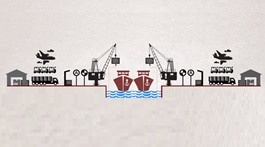

INCOTERMS
Los Incoterms (abreviatura de International Commercial Terms) son términos utilizados en los contratos internacionales que detallan las obligaciones de cada una de las partes (exportador-vendedor e importador-comprador) a la hora de entregar las mercancías.
Mas informacionANEXO 24

Es una herramienta de comercio exterior que permite consultar, de forma automatizada, información básica sobre los inventarios de una empresa de mercancías de entrada (importación) y (exportación), y administrar los inventarios en materia de comercio exterior.
Mas informacionANEXO 30

Ahora referido como el Sistema de Control de Cuentas de Créditos y Garantías, es una herramienta vital para el SAT y las empresas con Certificación en materia de IVA e IEPS.
Mas informacionPROGRAMA IMMEX

Es un instrumento de fomento a las exportaciones que puede ser utilizado por las empresas que importen mercancías de manera temporal y que realicen un proceso industrial o de servicio destinado a la elaboración, transformación o reparación y/o a la prestación de servicios de exportación, difiriendo el pago del Impuesto General de Importación, del Impuesto al Valor Agregado y, en su caso, de las cuotas compensatorias.
Mas informacionINCOTERMS
Los Incoterms (abreviatura de International Commercial Terms) son términos utilizados en los contratos internacionales que detallan las obligaciones de cada una de las partes (exportador-vendedor e importador-comprador) a la hora de entregar las mercancías.
Mas informacionANEXO 24
Es una herramienta de comercio exterior que permite consultar, de forma automatizada, información básica sobre los inventarios de una empresa de mercancías de entrada (importación) y (exportación), y administrar los inventarios en materia de comercio exterior.
Mas informacionANEXO 30
Ahora referido como el Sistema de Control de Cuentas de Créditos y Garantías, es una herramienta vital para el SAT y las empresas con Certificación en materia de IVA e IEPS.
Mas informacionPROGRAMA IMMEX
Es un instrumento de fomento a las exportaciones que puede ser utilizado por las empresas que importen mercancías de manera temporal y que realicen un proceso industrial o de servicio destinado a la elaboración, transformación o reparación y/o a la prestación de servicios de exportación, difiriendo el pago del Impuesto General de Importación, del Impuesto al Valor Agregado y, en su caso, de las cuotas compensatorias.
Mas informacion